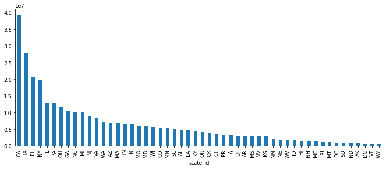

Merge/Join Tables (VLOOKUP)¶
The merge function mimics the functionality of JOIN in SQL queries and replaces the VLOOKUP functionality in Excel. It is one of the most powerful and useful functions for dataframes in Pandas. The main idea is to:
join two (or more) dataframe table using similar keys in each of the tables.
enrich tables with loopup data
validate the match values of the key columns in the tables
import pandas as pd
Loading data¶
We will now start with another data from API from Simple Maps
url = 'https://mlguy-public.s3-eu-west-1.amazonaws.com/excel2pandas/chapter3/simplemaps_uszips_basicv1/uszips.csv'
import requests
from io import StringIO
response = requests.get(url)
response
<Response [200]>
df = (
pd
.read_csv(StringIO(response.text))
)
df.head(5)
| zip | lat | lng | city | state_id | state_name | zcta | parent_zcta | population | density | county_fips | county_name | county_weights | county_names_all | county_fips_all | imprecise | military | timezone | |
|---|---|---|---|---|---|---|---|---|---|---|---|---|---|---|---|---|---|---|
| 0 | 601 | 18.18004 | -66.75218 | Adjuntas | PR | Puerto Rico | True | NaN | 17242 | 111.4 | 72001 | Adjuntas | {'72001':99.43,'72141':0.57} | Adjuntas|Utuado | 72001|72141 | False | False | America/Puerto_Rico |
| 1 | 602 | 18.36073 | -67.17517 | Aguada | PR | Puerto Rico | True | NaN | 38442 | 523.5 | 72003 | Aguada | {'72003':100} | Aguada | 72003 | False | False | America/Puerto_Rico |
| 2 | 603 | 18.45439 | -67.12202 | Aguadilla | PR | Puerto Rico | True | NaN | 48814 | 667.9 | 72005 | Aguadilla | {'72005':100} | Aguadilla | 72005 | False | False | America/Puerto_Rico |
| 3 | 606 | 18.16724 | -66.93828 | Maricao | PR | Puerto Rico | True | NaN | 6437 | 60.4 | 72093 | Maricao | {'72093':94.88,'72121':1.35,'72153':3.78} | Maricao|Yauco|Sabana Grande | 72093|72153|72121 | False | False | America/Puerto_Rico |
| 4 | 610 | 18.29032 | -67.12243 | Anasco | PR | Puerto Rico | True | NaN | 27073 | 312.0 | 72011 | Añasco | {'72003':0.55,'72011':99.45} | Añasco|Aguada | 72011|72003 | False | False | America/Puerto_Rico |
Lookup Data Exploration¶
We have loaded the zip code Lookup data for the US. Let’s see what data do we have here.
Counting Values¶
The simplest aggregation function for each group is the size. How many breweries do we have in each state?
(
df
.groupby('state_id')
.size()
)
state_id
AK 238
AL 642
AR 591
AZ 405
CA 1761
CO 525
CT 282
DC 52
DE 67
FL 981
GA 735
HI 94
IA 934
ID 277
IL 1383
IN 775
KS 697
KY 767
LA 515
MA 537
MD 468
ME 432
MI 986
MN 884
MO 1022
MS 423
MT 361
NC 808
ND 383
NE 581
NH 248
NJ 595
NM 368
NV 175
NY 1794
OH 1195
OK 648
OR 417
PA 1795
PR 131
RI 77
SC 424
SD 371
TN 628
TX 1935
UT 287
VA 896
VT 255
WA 596
WI 772
WV 706
WY 178
dtype: int64
Sorting Values¶
To sort the values is also simple with sort_value() function
us_population_distribution = (
df
.groupby('state_id')['population']
.sum()
.sort_values(ascending=False)
)
us_population_distribution
state_id
CA 39140219
TX 27884135
FL 20594164
NY 19618323
IL 12821487
PA 12790950
OH 11639989
GA 10297534
NC 10155624
MI 9957465
NJ 8881845
VA 8414042
WA 7280023
AZ 6949259
MA 6830133
TN 6644470
IN 6637220
MO 6090358
MD 6003435
WI 5777892
CO 5531233
MN 5527473
SC 4955925
AL 4864630
LA 4663243
KY 4446667
OR 4081732
OK 3918473
CT 3581504
PR 3384779
IA 3133061
UT 3043806
AR 2990472
MS 2988710
NV 2923171
KS 2908448
NM 2089570
NE 1904901
WV 1828786
ID 1687214
HI 1422019
NH 1343673
ME 1332721
RI 1056611
MT 1042359
DE 949495
SD 864012
ND 751250
AK 737979
DC 684390
VT 624977
WY 582091
Name: population, dtype: int64
Visualization of the data¶
(
us_population_distribution
.plot
.bar(figsize=(13,5))
);
